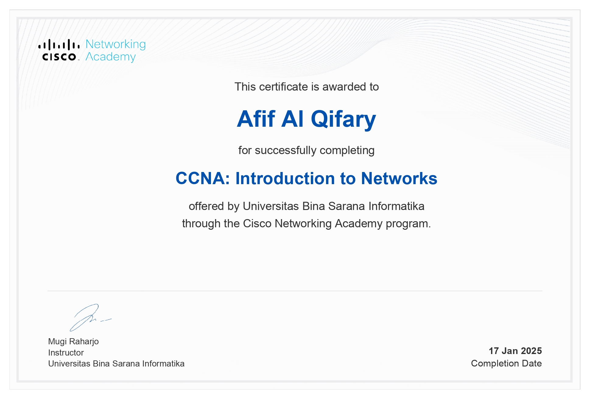
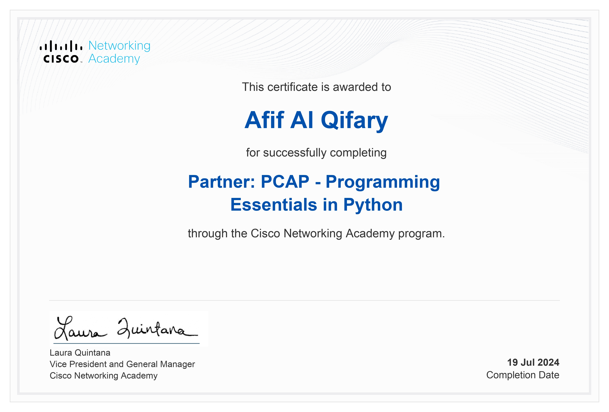
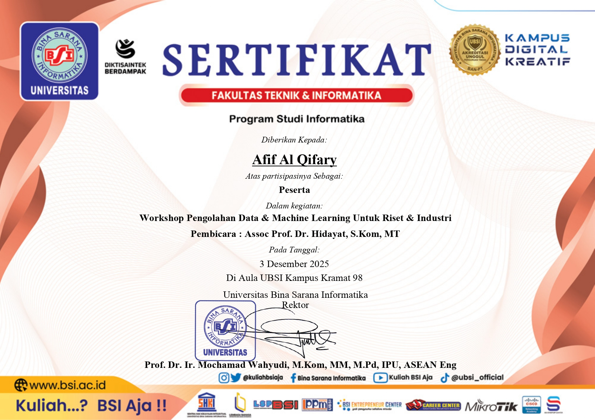

Sertifikat Saya

CCNA: Intro to Networks
Klik untuk melihat detail

PCAP: Python Essentials
Klik untuk melihat detail

Data & Machine Learning
Klik untuk melihat detail
×

Judul Sertifikat
Tanggal
Deskripsi rincian sertifikat akan muncul di sini.
Keterampilan Multimedia
Background yang bergerak adalah salah satu karya saya di bidang Multimedia pada aplikasi Adobe After Effect.Hubungi Saya
Tertarik untuk berdiskusi lebih lanjut atau menjadwalkan wawancara? Jangan ragu untuk menghubungi saya melalui: